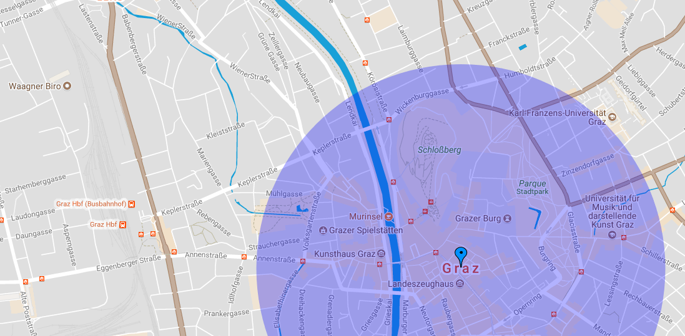
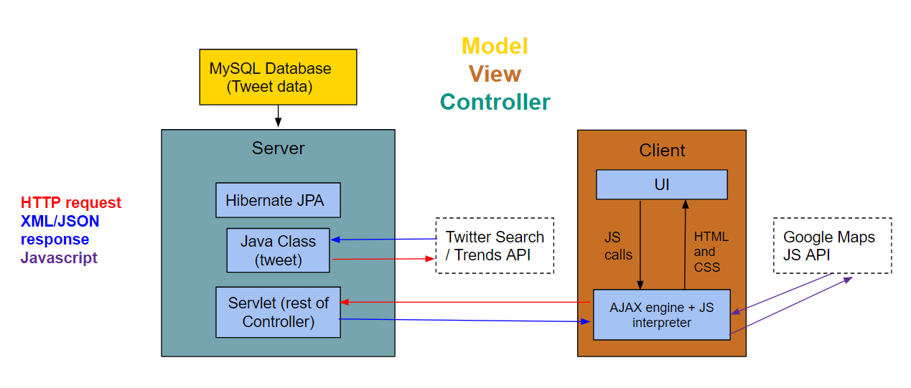

-
#Trackr is a single page web application which enables users to track Twitters trends
geographically by displaying a data layer of tweet locations over a
Google Map.
The menu on the left hand side allows the user to filter tweets by hashtag, location and time/date to
track and display them in the Google Map. The filtered tweets appear as markers inside the selected
region, colored in blue. By clicking one of the markers, information about the tweet is shown:
tweet text, Tweter's name and picture...
In addition, the chart under the menu is a time line chart that shows the tweets per hour about the
desired hashtag in the defined area.
//I will put a different photo (or photos) that shows the performance of the final app
- 
App Architecture
- 
- The app follows the MVC (Model-View-Controller) design pattern,
ensuring that the model (MySQL database, with Tweet data), the controller (Wildfly +
Hibernate server stack) and the view (HTML5, CSS and Javascript)
are separated and commmunicate via clear APIs.
The core HTML5 feature used is Canvas (to draw the selected areas
onto the map) and the app also make use of the geolocation
API and semantic markup.
- Back end
The back end goal in this project is to take the tweets from the twitter api,
instantiate it as an object and send it to both front end and database (for further analysis
and to retrieve previous tweets for users).
To do so, we have the ressources that are made to replicate the JSON object from the twitter api response a
TwitterBuilder, that will basically handle everything from querying to create objects and then putting
it inside the database, and the servlet class used to make the connection between the front end and the
back end.
For the back end setup, has been used Wildfly (as a server) with Hibernate (the persistence)
and MySQL database. The whole back end is written in Java.
- Front end
The front end has been developed has a single-page interface designed to be responsive for a range of
screen sizes (optimised for desktops browsers and mobile phones). It has been implemented with
HTML5, CSS and Javascript (Using Bootstrap framework).
HTML5. The HTML5 is designed to organize the web page content in three parts: the menu (for filtering
the tweets), the Google Maps layer and the chart, where the data is displeyed. It also contains the
links to the style sheet, JavaScript, Canvas and the Bootstrap libraries.
CSS. The CSS implements the style of the web page. In order to achieve a modern, clear and clean
design, Columbus Team has chosen a BootstrapCDN template for forms, buttons and other user
interface items.
JavaScript. The JavaScript code allows the client's interaction with the app. It uses the client's
requirements (location, time and hashtag) to display the data onto the map layer and the chart.
Everytime that a research is done, the desired location is shown in the map with a canvas blue cercle.
Inside this cercle, the filtered tweets appear as blue markers. It is possible to select any of these
markers to get further information about the tweet. In order to make sure about which tweet is selected,
the marker change its colour to yellow when it is clicked. Furthermore, JavaScript ensures the total
data overview by changing the boundaries of the map layer after every research. The client can also
choose between two different map themes.
In order to make the web page feel more responsive, an asynchronous application model with AJAX and JS
has been implemented. The code is also prepared to reset the information on the Google Maps layer (by clicking
the reset button) and to display an error message if there is any issue during its performance.
Highlight used technologies
- #trackr is a pure web application (no browser Plug-ins)
that uses different Web Technologies:
Canvas. The core HTML5 technology used is canvas. It has been implemented to encircle
dynamically the desired locations that filter the tweets. The menu on the left hand side allows the user
to choose where the center is going to be placed and its radius. According to the client requirements,
afterwards it is also possible to increase and decrease the radius of every circle.
Geolocation API. Google Maps Geolocation API collects the tweet's location information and
displays it onto a maps layer with markers. Furthermore, the InfoWindows object of Google Maps API
shows the tweets content in a pop-up window.
Semantic markups. The HTML5 has been implemented with different semantic markups
(//exemples).
D3js chart. #trackr has implemented D3js JavaScript library to draw the chart using SVG.
//I need Gaspar to tell me what is the finall chart about
AJAX. //I have to write also about AJAX here
- #trackr is using a database (MySQL database), because of the limit of tweets that the
application can retrieve, if it is needed to do an analysis or if an user is using the same hashtag often,
there is not need to require it.
The model of the database is pretty simple as it uses the same model as the JSON Object from twitter API,
a Tweet object (therefore, the first table) containing an User Object (a second table) and an Entities
Object (a third table).
The choice of MySQL as a database was made because of the good connection with Hibernate.
- Discussion: what worked well, which problems did you encounter //Cath, can you help
me to summarize it?